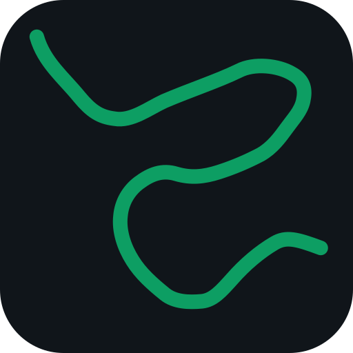

Alzette Connect
Platform-neutral product mockup · illustrative workspace

Alzette Connect CONCEPTEMPLOYEE CONNECTION
Launch your approved AI tools.
Sign in to load the models assigned by your company. Connect keeps remote credentials out of desktop applications.
- Models
- Set by your company
- Applications
- Qualified before launch
- Credentials
- Kept inside Connect
ILLUSTRATIVE CATALOGUEAssigned models
Compatibility is checked per application.
- alzette-chatText · toolsAvailable
- approved-coderCode · toolsAvailable
- document-reviewLong contextAvailable
- reasoning-privateReasoningAvailable
APPLICATIONS
Choose where to work
Double-click to launch
Select an application and press Enter, or double-click a ready application, to launch it.
Launch Pi through AlzettePi will receive all 4 compatible models. Choose a model inside Pi.
4 models available through AlzetteCurrent company access confirmed
LAUNCHING PI
Preparing the connection
Connect is configuring a temporary Pi profile. Remote credentials remain inside Alzette Connect.
- ✓Application checkedPi 0.84.2 is qualified
- ✓Model catalogue prepared4 compatible models
- Secure local connectionStarting on this device
- Open PiWaiting for connection
4 models available through AlzetteCurrent company access · Pi is using this catalogue
APPLICATIONS
Choose where to work
Disconnect Pi to launch another app
PiStarted at 09:41
4 modelsActive alias not observed yet
Running
Jan DesktopInstalled · 0.8.4
4 modelsFull catalogue
1 Available after disconnect
Goose DesktopInstalled · 1.42.0
—Version blocked
! Update required
Claude CodeInstalled · adapter planned
—Anthropic Messages needed
× Protocol unavailable
CodexInstalled · 0.42.0
—Responses API needed
× Protocol unavailable
Pi is connected through AlzetteConnect must remain running. Closing this window keeps it active in the tray.
Pi disconnected. One local cleanup action needs attention.The Alzette connection is closed and its grant has been revoked.
LOCAL RECOVERY
Restore the application profile
Pi changed its profile while Connect was closing, so Connect did not overwrite the newer file automatically.
- Remote access
- ✓ Revoked
- Local connection
- ✓ Closed
- Profile backup
Pi profile · backup 09:44- Reason
- Application settings changed after launch